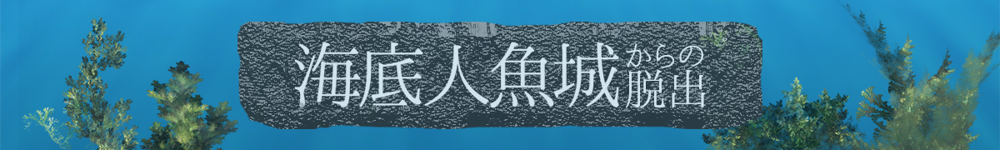

全ステージ クリア！
おめでとう！あなたはついに全ての謎を解き、女王人魚を救うことができた！
そして女王人魚からあるメッセージが伝えられた・・・
あなたはきっと、このメッセージをずっと忘れることはないだろう・・・。
これからも家庭科室が封鎖されるようなことがあったら、
この教訓をしっかり思い出してくれ。
それでは、また会おう！
遊んでくれてありがとう！
Special Thanks
リアル脱出ゲームとは
2004年に発表されたネットで爆発的に盛り上がった「脱出ゲーム」を、そのフォーマットそのままに現実世界に移し替えた大胆な遊びが「リアル脱出ゲーム」。マンションの1室や廃校、廃病院、そして東京ドームや六本木ヒルズなど、様々な場所で開催され、2007年に初開催して以降、現在までで累計820万人以上を動員。日本のみならず上海、台湾、シンガポールやサンフランシスコなど全世界で参加者を興奮の渦に巻き込み、男女問わずあらゆる世代を取り込む、今大注目の体験型エンターテインメント。
このゲームの企画者
N/S高等学校 横浜キャンパス チーム千手海鼠
制作メンバー
本間 陸人 コード・ステージ装飾
坂岡 沙紀 作問・ステージ装飾
森田 悠斗 コード・ページ装飾
大谷 脩太郎 ビジュアル・ステージ装飾